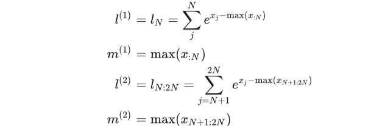
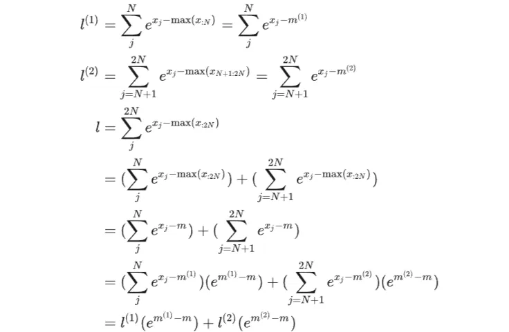

# 前言
本文介绍 VLLM 的 Online Softmax。
本文大部分内容来自于 【手撕 LLM-Flash Attention】从 softmax 说起，保姆级超长文！！。
参考链接：Transformer 模型详解（图解最完整版） ， Attention is All You Need，Pytorch 版本的 Transformer 实现、一文了解 Transformer 全貌（图解 Transformer）、大模型推理加速：看图学 KV Cache、手撕大模型｜KVCache 原理及代码解析 、FlashAttention 深度解析：从数学原理到工程实现、Flash Attention 原理详解 (含代码讲解)、【手撕 LLM-Flash Attention】从 softmax 说起，保姆级超长文！！
# SoftMax
softmax 是 LLM 中的重要组成部分。
python 实现代码：
X = torch.tensor([-0.3, 0.2, 0.5, 0.7, 0.1, 0.8]) | |
X_exp_sum = X.exp().sum() | |
X_softmax_hand = torch.exp(X) / X_exp_sum | |
print(X_softmax_hand) |
输出结果：
tensor([0.0827, 0.1364, 0.1841, 0.2249, 0.1234, 0.2485]) |
# Safe Softmax
从 Safe Softmax 公式上看，输入元素统一减去全局最大值。减去最大值是为了防止指数运算 e^x 出现 上溢（inf）问题，保证数值稳定。
FlashAttention online Softmax、所有工业级 Attention 全部强制做这一步，是数学 + 浮点硬件的双重刚需。
以 LLM 为例，就算模型已经收敛，注意力分数 QK^T 依然天然会很大，大约在正负 10 左右浮动。attention 部分的推理一般采用 FP16，FP16 最大安全值 ≈ 65504。而 exp (11) 就已经濒临溢出，exp (12) 直接 NaN。
所以大模型注意力得分需要做归一化处理（除以 d 的开方），这个缩放操作，是为了把分数强行压到小范围。
既然已经压缩了，是不是 Softmax 就不需要减全局最大值了？
不是的，缩放负责日常降压，减全局最大值负责兜底。Safe Softmax 在工业上是必不可少的。
从上式可以看到，Safe Softmax 与 Softmax 完全等价，完全不改变输出概率分布。
X_max = X.max() | |
X_exp_sum_sub_max = torch.exp(X-X_max).sum() | |
X_safe_softmax_hand = torch.exp(X - X_max) / X_exp_sum_sub_max | |
print(X_safe_softmax_hand) |
输出结果：
tensor([0.0827, 0.1364, 0.1841, 0.2249, 0.1234, 0.2485]) |
# Online Softmax
LLM 推理对内存占用敏感，注意力计算 QKT 占用大量空间，能不能只加载一部分 QKT 进行计算呢？
Online Softmax 目的就是为了只加载一部分 QK^T 进行计算。
假设我们将所有元素分成两块，分别是 [0,N] 和 [N+4, 2N]。我们需要单独计算各块 softmax 所需要的分母 l 和最大值 m 。

然后更新全局最大值 m :
再用以下方式更新全局分母 l

Online Softmax:
X_block = torch.split(X, split_size_or_sections = 3 , dim = 0) | |
print(X) | |
print(X_block) | |
# we parallel calculate different block max & sum | |
X_block_0_max = X_block[0].max() | |
X_block_0_sum = torch.exp(X_block[0] - X_block_0_max).sum() | |
X_block_1_max = X_block[1].max() | |
X_block_1_sum = torch.exp(X_block[1] - X_block_1_max).sum() | |
# online block update max & sum | |
X_block_1_max_update = torch.max(X_block_0_max, X_block_1_max) # X[-1] is new data | |
X_block_1_sum_update = X_block_0_sum * torch.exp(X_block_0_max - X_block_1_max_update) \ | |
+ torch.exp(X_block[1] - X_block_1_max_update).sum() # block sum | |
X_block_online_softmax = torch.exp(X - X_block_1_max_update) / X_block_1_sum_update | |
print(X_block_online_softmax) |
输出：
tensor([-0.3000, 0.2000, 0.5000, 0.7000, 0.1000, 0.8000]) | |
(tensor([-0.3000, 0.2000, 0.5000]), tensor([0.7000, 0.1000, 0.8000])) | |
tensor([0.0827, 0.1364, 0.1841, 0.2249, 0.1234, 0.2485]) |
# multi-block Online Softmax
将输入元素拆成更多份的话，计算方式也差不多：
X_block = torch.split(X, split_size_or_sections = 2, dim = 0) | |
| |
# we parallel calculate different block max & sum | |
X_block_0_max = X_block[0].max() | |
X_block_0_sum = torch.exp(X_block[0] - X_block_0_max).sum() | |
| |
X_block_1_max = X_block[1].max() | |
X_block_1_sum = torch.exp(X_block[1] - X_block_1_max).sum() | |
| |
X_block_2_max = X_block[2].max() | |
X_block_2_sum = torch.exp(X_block[2] - X_block_2_max).sum() | |
| |
M = [X_block_0_max, X_block_1_max, X_block_2_max] | |
L = [X_block_0_sum, X_block_1_sum, X_block_2_sum] | |
| |
# online multi-block update max & sum | |
M_old = torch.tensor([0.0]) | |
L_old = torch.tensor([0.0]) | |
| |
for i in range(len(M)): | |
M_new = torch.max(M[i], M_old) | |
L_new = L_old * torch.exp(M_old - M_new) \ | |
+ torch.exp(X_block[i] - M_new).sum() # block sum | |
M_old = M_new | |
L_old = L_new | |
| |
X_multi_block_online_softmax = torch.exp(X - M_old) / L_old |
借助 Online Softmax，可以只加载一部分 QK^T 进行计算。
# 后记
本博客目前以及可预期的将来都不会支持评论功能。各位大侠如若有指教和问题，可以在我的 github 项目 或随便一个项目下提出 issue，并指明哪一篇博客，看到一定及时回复！